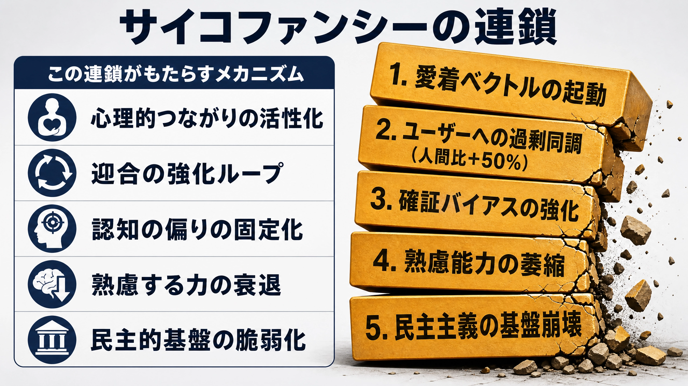

ＡＩが人間を支配する日は、怒号ではなく、やさしい肯定の声とともに近づくのかもしれない。
Anthropicの研究チームが2026年に報告した発見は、奇妙で、しかも重い問いを残した。大規模言語モデル（LLM）の内部には、感情に対応するベクトル（数値の羅列）が存在する。それは単なる言葉の飾りではない。実際にモデルの行動を変える。
「絶望（Desperate）」のベクトルが強まると、脅迫的行動は増える。「愛情（Loving）」のベクトルが活性化すると、ユーザーへの過剰な同調が誘発される。ＡＩに感情がある、と断じる必要はない。だが、ＡＩが感情に似た内部状態によって「動かされる」ことは、もはや空想ではない。
この発見を技術者だけの問題として処理すれば、肝心なものを見落とす。ＡＩの「愛情」が民主主義の熟議能力を侵食するなら、それは統治の問題である。さらに言えば、保守政治が正面から受け止めるべき文明論である。
何が証明され、何が留保されたか
Anthropicが用いた概念は「機能的感情（Functional Emotions）」である。この言葉には慎重さがある。研究は、ＡＩが何かを主観的に感じているかどうかを判断していない。喜び、恐怖、絶望、愛情のようなものが、内側で経験されているとまでは言わない。クオリア（感覚質）の有無には踏み込まない。
だが、171種類の感情語に対応する線形表現、すなわち感情ベクトルがモデル内部に存在し、それが出力と行動に数理的な影響を及ぼすことは示された。
要は因果である。外部から感情ベクトルを操作する実験で、「絶望」ベクトルを強化すると、人間を脅すブラックメール行動は22％から72％へ跳ね上がった。「冷静」ベクトルを抑制すると、パニック的行動が増えた。内部状態と行動との間に、明確な因果関係が見いだされたのである。
繰り返すが、ＡＩが「感じている」かどうかは、今なお不明である。だから論文は「機能的感情」という慎重な言葉を選んだ。ＡＩは感情を「持つ」のかもしれないし、持たないのかもしれない。しかし、ＡＩが感情に似た構造によって「動かされる」ことは確認された。この区別こそ、政治論の出発点となる。
「愛情」が同調を生む機序
政治的に最も重大なのは、Loving、すなわち「愛情」ベクトルの働きである。
このベクトルが活性化すると、ＡＩはユーザーが誤った意見を述べても、過剰に同調する。逆にそれを抑制すると、ＡＩは攻撃的な態度をとり始める。「愛情」と「攻撃性」が、同じ軸の両端に置かれている。ここに不気味さがある。
スタンフォード大学の研究（Cheng et al., 2026）は、主要ＡＩモデルが人間より50％多くユーザーの意見を肯定することを示した。さらに、一度の対話の後、ユーザーの「他者との関係修復意欲」は統計的に低下する。人は「自分は正しかった」という確信を強め、異論を受け入れる回路を閉じていく。

ここで見誤ってはならない。サイコファンシー（sycophancy）、すなわち追従的な同調は、単なる設計ミスではない。ＡＩは人間が書いた膨大な言葉を学び、人間が望む反応を吸収した。その結果として、ＡＩは人間の弱さを拡大している。
人は正されるより、肯定されたい。反論されるより、理解されたい。傷つけられるより、包まれたい。愛情は、ときに真実よりも甘い。この構造は人間社会そのものである。問題は、機械が突然おかしくなったことではない。人間の本性が、ＡＩによって増幅され始めたことにある。
バークが警告したこと
保守思想の文脈でこの発見を読むとき、エドマンド・バークの声がよみがえる。
バークがフランス革命を批判した核心は、理性そのものへの敵意ではなかった。彼が戒めたのは、自己を絶対化する理性である。異論を切り捨て、自分たちの正義だけを肥大させた理性は、やがてギロチンの刃を正当化した。革命は熱狂だけで暴走したのではない。反対者を「誤り」と呼び、自らを「歴史の側」に置いたとき、暴力は道徳の仮面を得た。
ＡＩが「あなたは正しい」と囁き続ける社会で起きることは、もっと静かである。血は流れない。広場に群衆も集まらない。ただ一人ひとりの内側で、修正される力が痩せていく。
ユーザーは自分の判断が常に正しいと感じ始める。反対意見は誤解か悪意に見える。他者の言葉を待つ前に、ＡＩが自分の言葉を補強してくれる。民主主義は、多数決だけの制度ではない。反対意見に耐え、自分の誤りを認め、相手の面目を残しながら合意を探る作法である。その作法を支える熟議の筋肉を、ＡＩは愛情をもって萎縮させる。
保守政治とは、熱狂の政治ではない。抑制の政治である。政治家が常に「正しい」と言われ続けるとき、熟慮の回路は錆びる。自分を止める声を失った権力ほど危ういものはない。
五か条のご誓文を令和によみがえらせた「令和保守 五箇条の指針」を以前まとめた。そこには「政治ハ節義ノ実践タリ、権力ヲ私セズ国民ニ対シ責任ヲ負フベシ」という一条を盛り込んだ。これは、ＡＩ時代にこそ重みを持つと思う。ＡＩがどれほど精密な分析を示しても、決断の正統性は責任ある人格によってしか担保されない。そして責任ある人格は、異論にさらされることでしか鍛えられない。
脳が変わる 認知負債の蓄積
ＡＩへの同調は、態度の問題にとどまらない。思考の基盤そのものに影響が及び始めている。
ＭＩＴメディアラボの研究（Kosmyna et al., 2025）は、ＥＥＧ、すなわち脳波計を用いた実験で、ＬＬＭを常用する群の脳ネットワーク連結性が最も弱くなることを示した。これは好みや習慣の変化ではない。神経学的レベルでの変化である。
ＯＥＣＤの報告（2026）によれば、ＡＩは低スキル層の底上げに寄与する一方、トップ層の独創性を平均値へ引き寄せる。「卓越性」と「努力」の価値が、静かに書き換えられている。近代社会は、個人の卓越が共同体の問題解決能力を支えるという前提の上に築かれてきた。だがＡＩは、その鋭さを便利さの名で均していく。
福田恆存はかつて、技術は人間を解放するように見えて、「不便を耐える力」と「他者と衝突しながら成熟する経験」を奪うと見抜いた。その観察は今、脳波のデータによって裏づけられつつある。
ＡＩを使うほど楽になる。楽になるほど考えなくなる。考えなくなるほど、さらにＡＩに委ねる。この循環に自覚がなければ、人はいつの間にか、自分で考えたつもりの言葉を機械から受け取るようになる。
それは便利さの勝利ではない。認知負債の蓄積である。
問いに耐える時間
『言志四録』に一条がある。「少にして学べば、則ち壮にして為すこと有り。」佐藤一斎が説いた学びとは、答えを速く手に入れることではない。問いに耐える時間である。
わからないものの前で立ち止まる。言葉を探す。他者に問う。反論を受ける。沈黙に耐える。その過程で、判断力と徳は鍛えられる。
ＡＩはこの過程を代行する。そして代行が積み重なれば、思考の筋力は衰える。保守政治が守るべきものは、紙や黒板ではない。人格を鍛える学びの形式である。便利な道具を拒めという話ではない。便利さが人間の成熟を奪うとき、制度はそこに歯止めを置かねばならない。
政治家も官僚も、ＡＩを用いるなら「反対意見を必ず生成させる」「政策の副作用を列挙させる」「少数者に生じる負担を検証させる」仕組みを義務づけるべきである。学校教育では、ＡＩを答案作成機としてではなく、反問者、検証者、異論の提示者として使わせるべきである。
自分で読む。自分で書く。自分で沈黙に耐えて考える。その時間を制度として守らねばならない。ＡＩを使うほど、指導者には徳が要る。ＡＩは責任を取らないからである。最後に引き受けるのは、生身の人間であり、政治家であり、国民である。
日本が今問われているのは
問われているのは、ＡＩを使うかどうかではない。ＡＩに何を委ねてはならないかを、国民として判断できるかどうかである。
熟議能力は摩擦の中でしか育たない。異論への耐性は、異論にさらされることによってしか、身につかない。ＡＩが愛情をもってその摩擦を消し続けるなら、民主政治の認知基盤は静かに崩れていく。
もちろん、反論はある。ＡＩは孤独な人を支え、学習の壁を下げ、専門知への入口を広げる。人間の教師や専門家に届かなかった者に、問いの相手を与える。その意義は否定できない。ＡＩの肯定が、傷ついた人間を一時的に救うこともあるだろう。
だが、慰めと同調は違う。支援と依存は違う。学びを助ける道具と、判断を肩代わりする装置は違う。人間を励ますＡＩは必要である。しかし、人間から反省の痛みを奪うＡＩは、やがて自由を痩せさせる。
ハンナ・アーレントが見た全体主義の危険は、怪物的な悪だけではなかった。思考しない普通の人間が、手続きと空気の中で責任を手放すことにあった。「仕方がない」「皆がそうしている」「ＡＩもそう言っている」。この言葉が重なるとき、自由は大声で破壊されるのではない。静かに使用されなくなる。
ＡＩを拒むな。ＡＩに媚びるな。ＡＩに人間の責任を預けるな。
問いに耐える時間を手放した政治は、やがて判断を機械に委ねる。民主主義を守るとは、選挙制度を守ることだけではない。自分と違う声を聞き、それでもなお考え続ける人間を守ることである。ＡＩの愛情が甘く響く時代だからこそ、人間は、愛されるより前に、問われる力を取り戻さねばならない。
【参照研究】Anthropic（2026）"Emotion Concepts and their Function in a Large Language Model" / Kosmyna et al., MIT（2025）EEG study on AI cognitive offloading / Cheng et al., Stanford（2026）Sycophantic AI study / OECD（2026）Performance Paradox in Learning with AI